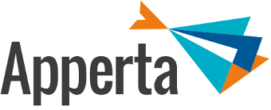

		<!-- Main -->
			<article id="main">
				<!-- <section class="wrapper style1 container special"> -->
					<!-- <div class="row"> -->
						<!-- <div class="12u"> -->

							<!-- <section> -->
								<!-- <span class="icon featured fa-users"></span> -->
								<!-- <header> -->
									<!-- <h3>Partners.</h3> -->
								<!-- </header> -->
								<!-- <p>Healthcare organisations can be confident of a successful implementation programme delivering real clinical benefits with support from Enterprise service providers. -->
								<!-- <br /><br /> -->
								<!-- <p>The Apperta Foundation, supported by NHS England, works with these partners to facilitate the adoption of open-eObs throughout the NHS.</p> -->
							<!-- </section> -->

						<!-- </div> -->
					<!-- </div> -->

				<!-- </section> -->

				<!-- One -->
					<!-- <section class="wrapper style1 container special" id="background"> -->
						<section class="wrapper style3 container special" id="partners">

						<!-- <header class="major">
						</header> -->

						<div class="row">
							<div class="6u">

								<section>

									<a href="https://www.bjss.com/" class="image"></a>
									<!-- <header> -->
										<!-- <h3>BJSS</h3> -->
									<!-- </header> -->
									<br /><br />
									<p><a href="http://www.bjss.com/">BJSS</a> - the Award-Winning, Delivery-Focused IT Consultancy that engineered and delivered the NHS E-Referral Service and NHS Spine 2. With over 20 years’ software delivery and IT advisory experience, we are renowned for technical excellence, cost-effective delivery and our proven BJSS Enterprise Agile approach.</p>
								</section>

							</div>
							<div class="6u">

								<section>
									<a href="https://www.radtac.com/" class="image"></a>
									<br /><br />
									<p><a href="https://www.radtac.com/">Radtac</a> are the consultancy supporting SHIP (Southampton, Hampshire, Isle of Wight and Portsmouth) Primary Care providers who are implementing an integrated Agile framework to ensure optimum delivery of high quality services.</p>
								</section>

							</div>
						</div>

						<div class="row">

							<div class="6u">
								<section>
									<br /><br /><br /><br />
									<a href="http://www.opusvl.com/" class="image"><object data="images/partners/opusvl-logo.svg" type="image/svg+xml"></object></a>
									<br /><br />
									<p><a href="http://www.opusvl.com/">OpusVL</a>'s approach to ensure a successful adoption emanates from a collaborative relationship with clients. All our projects are delivered through simple yet effective management methods, working with you in partnership with our business and technical teams.</p>
								</section>
							</div>

							<div class="6u">
								<section>
									<a href="https://apperta.org/" class="image"></a>
									<br /><br />
									<p><a href="https://apperta.org/">The Apperta Foundation</a> is a clinician-led, not-for-profit company. Supported by NHS England, NHS Digital and others, we promote open systems and standards for digital health and social care. We show how the delivery of health and social care can be transformed when data, information and knowledge in IT systems is open, shareable and computable.</p>
								</section>
							</div>

						</div>


					</section>

<!-- 					<section class="wrapper style3 container special">
						<div class="row">
							<div class="12u">

								<section>
									
									<p>Radtac are the consultancy supporting SHIP (Southampton, Hampshire, Isle of Wight and Portsmouth) is four Primary Care Trusts (PCTs) who are implementing world class commissioning of NHS services and evolving to interact with service suppliers highly collaboratively via Category Management. SHIP is implementing an integrated Agile framework, to ensure optimum delivery of high quality products. T
								</section>

							</div>
						</div>

					</section> -->

			</article>
